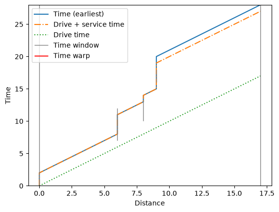

Time and duration constraints¶
PyVRP supports many constraints that relate to time and duration. These include the time windows and shift duration constraints we have previously seen in the quick start, but also extend to service durations, release times, and more. We explore some of these in this notebook.
Tip
See the Concepts page for a good overview of time-related attributes in PyVRP’s data model.
[1]:
import pyvrp
import pyvrp.plotting
import pyvrp.stop
Time windows and service durations¶
PyVRP supports time windows in a few places:
to model opening hours at depots;
to model when service may begin at clients;
to model driver shifts on vehicles.
Additionally, PyVRP supports service duration at depots and clients. Let’s see these features in action in a small example.
[2]:
COORDS = [(456, 320), (228, 0), (912, 0), (0, 80), (114, 80)]
TIME_WINDOWS = [(0, 30), (7, 12), (10, 15), (16, 18), (10, 13)]
SERVICE_DURATION = [2, 3, 3, 4, 1]
TRAVEL_DURATION_MATRIX = [
[0, 6, 9, 8, 7],
[6, 0, 8, 3, 2],
[9, 8, 0, 11, 10],
[8, 3, 11, 0, 1],
[7, 2, 10, 1, 0],
]
We now need to specify the time windows for all locations, and the duration of travelling along each edge. The depot’s time window is also applied to the vehicle type, to indicate shift time windows.
[3]:
m = pyvrp.Model()
m.add_vehicle_type(2, unit_distance_cost=0, unit_duration_cost=1)
m.add_depot(
location=m.add_location(x=COORDS[0][0], y=COORDS[0][1]),
tw_early=TIME_WINDOWS[0][0],
tw_late=TIME_WINDOWS[0][1],
service_duration=SERVICE_DURATION[0],
name="Depot",
)
for idx in range(1, len(COORDS)):
m.add_client(
location=m.add_location(x=COORDS[idx][0], y=COORDS[idx][1]),
tw_early=TIME_WINDOWS[idx][0],
tw_late=TIME_WINDOWS[idx][1],
service_duration=SERVICE_DURATION[idx],
name=f"Client {idx}",
)
for frm_idx, frm in enumerate(m.locations):
for to_idx, to in enumerate(m.locations):
duration = TRAVEL_DURATION_MATRIX[frm_idx][to_idx]
m.add_edge(frm, to, distance=duration, duration=duration)
res = m.solve(stop=pyvrp.stop.MaxRuntime(1))
PyVRP v0.14.0
Solving an instance with:
1 depot
4 clients
0 shipments
2 vehicles (1 vehicle type)
Iters Time | Current OK Candidate OK Best OK
Search terminated in 1.00s after 53579 iterations.
Best-found solution has cost 51.
Solution results
================
# routes: 2
# trips: 2
# clients: 4
# shipments: 0
objective: 51
distance: 35
duration: 51
# iterations: 53579
run-time: 1.00 seconds
Let’s investigate the route schedule in more detail:
[4]:
def print_schedule(res):
for idx, route in enumerate(res.best.routes()):
print(f"Route #{idx + 1}:")
for activity in route:
if activity.is_depot():
loc = m.depots[activity.idx]
else:
loc = m.clients[activity.idx]
start = activity.start_time
dur = activity.duration
print(f"- [t = {start:>02}] Service at {loc} takes time = {dur}.")
print_schedule(res)
Route #1:
- [t = 00] Service at Depot takes time = 2.
- [t = 08] Service at Client 1 takes time = 3.
- [t = 13] Service at Client 4 takes time = 1.
- [t = 16] Service at Client 3 takes time = 4.
- [t = 28] Service at Depot takes time = 0.
Route #2:
- [t = 00] Service at Depot takes time = 2.
- [t = 11] Service at Client 2 takes time = 3.
- [t = 23] Service at Depot takes time = 0.
Each route arrives nicely within the allowed time windows, and correctly accounts for service duration at the (starting) depot and client visits.
We can also visually inspect route schedules, which we will do for the first route:
[5]:
route = res.best.routes()[0]
pyvrp.plotting.plot_route_schedule(m.data(), route)

The plot shows the route schedule over distance and time, including client and depot time windows. This is a helpful manner to quickly understand whether there is wait duration, slack, or infeasibilities on the route. In this case, there is wait duration between clients 4 and 3: the vehicle needs to wait one time unit for client 3’s time window to open.
Important
Vehicles are allowed to wait for time windows to open. Waiting simply increases the route duration. Arriving late is not allowed, and incurs time warp.
Release times¶
Sometimes client deliveries are known in advance, but the goods they demand are not yet available at the depot. In this case, client release times are very useful. Release times are the earliest time at which a route servicing a client may leave the depot, and can thus be used to ensure routes are not dispatched before the goods are available.
Consider the previous example, and particularly the second route, which starts at \(t=0\) at the depot. Suppose now that Client 2’s goods are not available until \(t=4\). Setting a release time for this client of \(t=4\) should cause the route’s start time to be delayed until at least time \(t=4\).
Let’s see if it is.
[6]:
RELEASE_TIMES = [0, 4, 0, 0]
[7]:
m = pyvrp.Model()
m.add_vehicle_type(2, unit_distance_cost=0, unit_duration_cost=1)
m.add_depot(
location=m.add_location(x=COORDS[0][0], y=COORDS[0][1]),
tw_early=TIME_WINDOWS[0][0],
tw_late=TIME_WINDOWS[0][1],
service_duration=SERVICE_DURATION[0],
name="Depot",
)
for idx in range(1, len(COORDS)):
m.add_client(
location=m.add_location(x=COORDS[idx][0], y=COORDS[idx][1]),
tw_early=TIME_WINDOWS[idx][0],
tw_late=TIME_WINDOWS[idx][1],
service_duration=SERVICE_DURATION[idx],
release_time=RELEASE_TIMES[idx - 1],
name=f"Client {idx}",
)
for frm_idx, frm in enumerate(m.locations):
for to_idx, to in enumerate(m.locations):
duration = TRAVEL_DURATION_MATRIX[frm_idx][to_idx]
m.add_edge(frm, to, distance=duration, duration=duration)
res = m.solve(stop=pyvrp.stop.MaxRuntime(1))
PyVRP v0.14.0
Solving an instance with:
1 depot
4 clients
0 shipments
2 vehicles (1 vehicle type)
Iters Time | Current OK Candidate OK Best OK
Search terminated in 1.00s after 55078 iterations.
Best-found solution has cost 51.
Solution results
================
# routes: 2
# trips: 2
# clients: 4
# shipments: 0
objective: 51
distance: 35
duration: 51
# iterations: 55078
run-time: 1.00 seconds
Indeed, the route visiting Client 2 is now loaded at the depot at \(t=4\):
[8]:
print_schedule(res)
Route #1:
- [t = 00] Service at Depot takes time = 2.
- [t = 08] Service at Client 1 takes time = 3.
- [t = 13] Service at Client 4 takes time = 1.
- [t = 16] Service at Client 3 takes time = 4.
- [t = 28] Service at Depot takes time = 0.
Route #2:
- [t = 04] Service at Depot takes time = 2.
- [t = 15] Service at Client 2 takes time = 3.
- [t = 27] Service at Depot takes time = 0.
Shifts and overtime¶
PyVRP supports several time and duration constraints that apply to vehicles, which can be helpful to ensure vehicles start and end routes on time. Sometimes, a vehicle may be allowed to do overtime, at additional cost. PyVRP also supports this.
Let’s consider a small example where each vehicle must start at \(t=0\), and must return to the depot by \(t=30\). Additionally, a regular shift takes at most 20 time units, but a maximum overtime of 10 units is allowed, at additional cost.
[9]:
m = pyvrp.Model()
m.add_vehicle_type(
2,
tw_early=0, # earliest start of shift
start_late=0, # latest start of shift
tw_late=30, # latest end of shift
shift_duration=20, # nominal shift duration
max_overtime=10, # maximum allowed overtime
unit_distance_cost=0,
unit_duration_cost=1,
unit_overtime_cost=5, # additional unit overtime cost
)
m.add_depot(
location=m.add_location(x=COORDS[0][0], y=COORDS[0][1]),
name="Depot",
)
for idx in range(1, len(COORDS)):
m.add_client(
location=m.add_location(x=COORDS[idx][0], y=COORDS[idx][1]),
service_duration=SERVICE_DURATION[idx],
name=f"Client {idx}",
)
for frm_idx, frm in enumerate(m.locations):
for to_idx, to in enumerate(m.locations):
duration = TRAVEL_DURATION_MATRIX[frm_idx][to_idx]
m.add_edge(frm, to, distance=duration, duration=duration)
res = m.solve(stop=pyvrp.stop.MaxRuntime(1))
PyVRP v0.14.0
Solving an instance with:
1 depot
4 clients
0 shipments
2 vehicles (1 vehicle type)
Iters Time | Current OK Candidate OK Best OK
Search terminated in 1.00s after 52704 iterations.
Best-found solution has cost 76.
Solution results
================
# routes: 2
# trips: 2
# clients: 4
# shipments: 0
objective: 76
distance: 35
duration: 46
# iterations: 52704
run-time: 1.00 seconds
Both vehicles start exactly at \(t=0\), but cannot complete their shifts within regular time. Thus, they each do overtime (respectively, 5 and 1 unit of overtime), which incurs an additional cost of five per unit of overtime.
[10]:
print_schedule(res)
Route #1:
- [t = 00] Service at Depot takes time = 0.
- [t = 08] Service at Client 3 takes time = 4.
- [t = 13] Service at Client 4 takes time = 1.
- [t = 16] Service at Client 1 takes time = 3.
- [t = 25] Service at Depot takes time = 0.
Route #2:
- [t = 00] Service at Depot takes time = 0.
- [t = 09] Service at Client 2 takes time = 3.
- [t = 21] Service at Depot takes time = 0.
Conclusion¶
In this tutorial you learned about modelling time and duration constraints with PyVRP. Knowing how to model such constraints enables you to solve many practical routing problems.